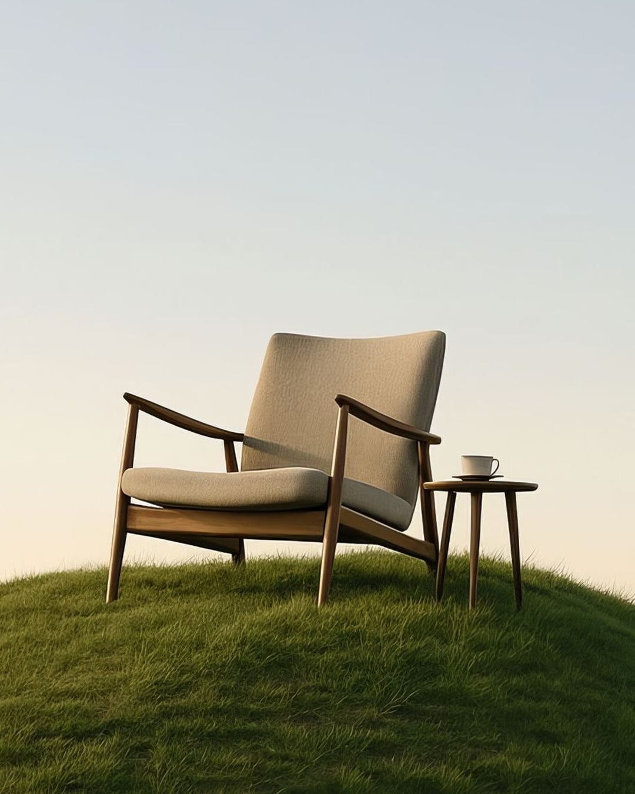
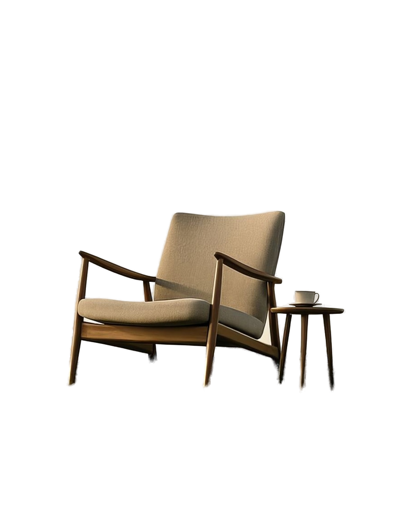
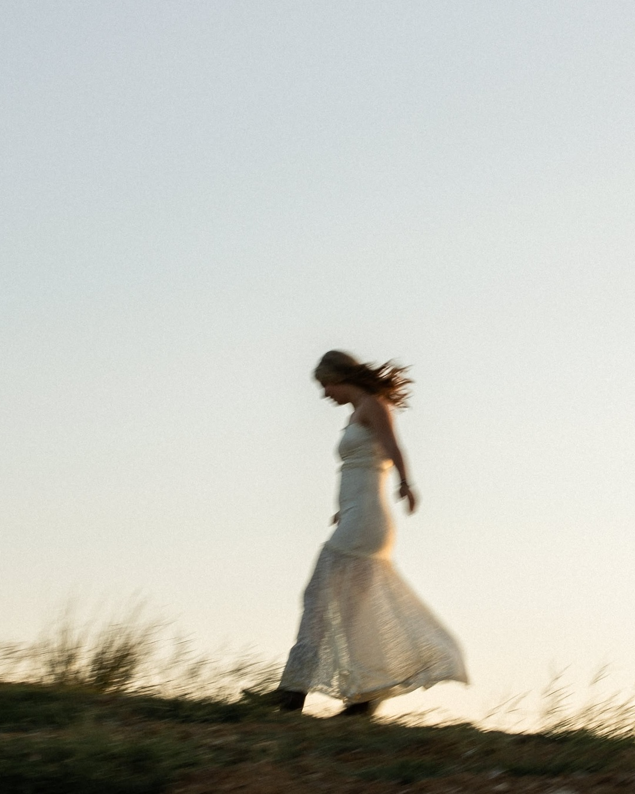
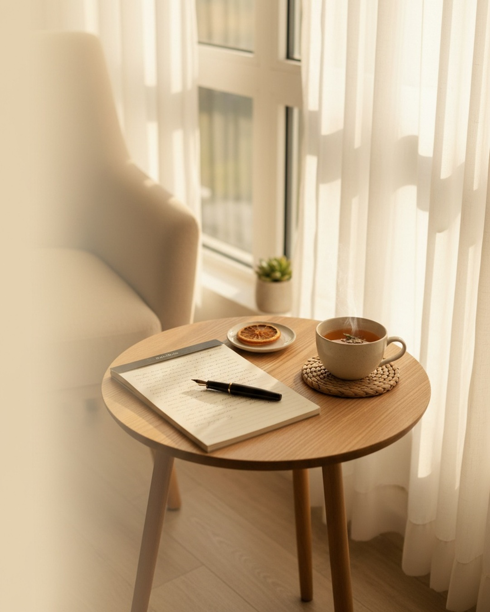
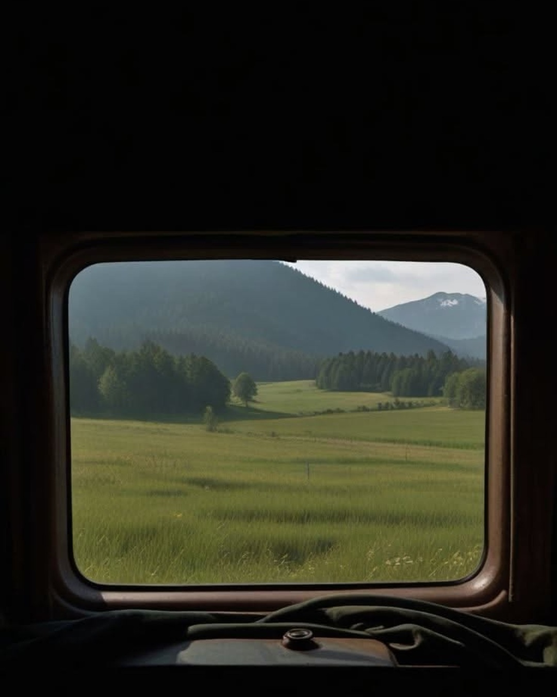
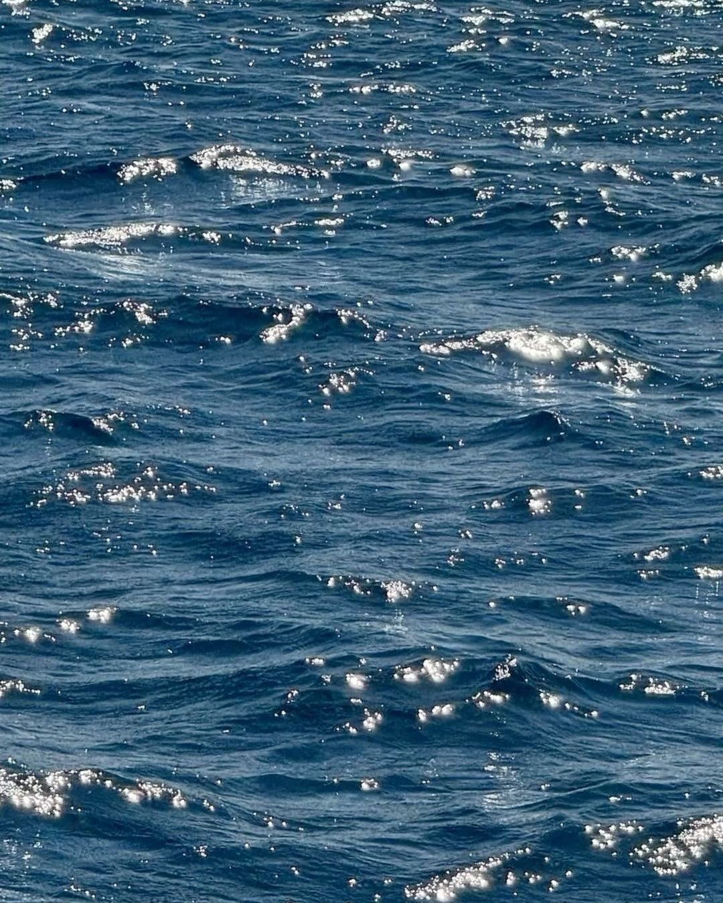
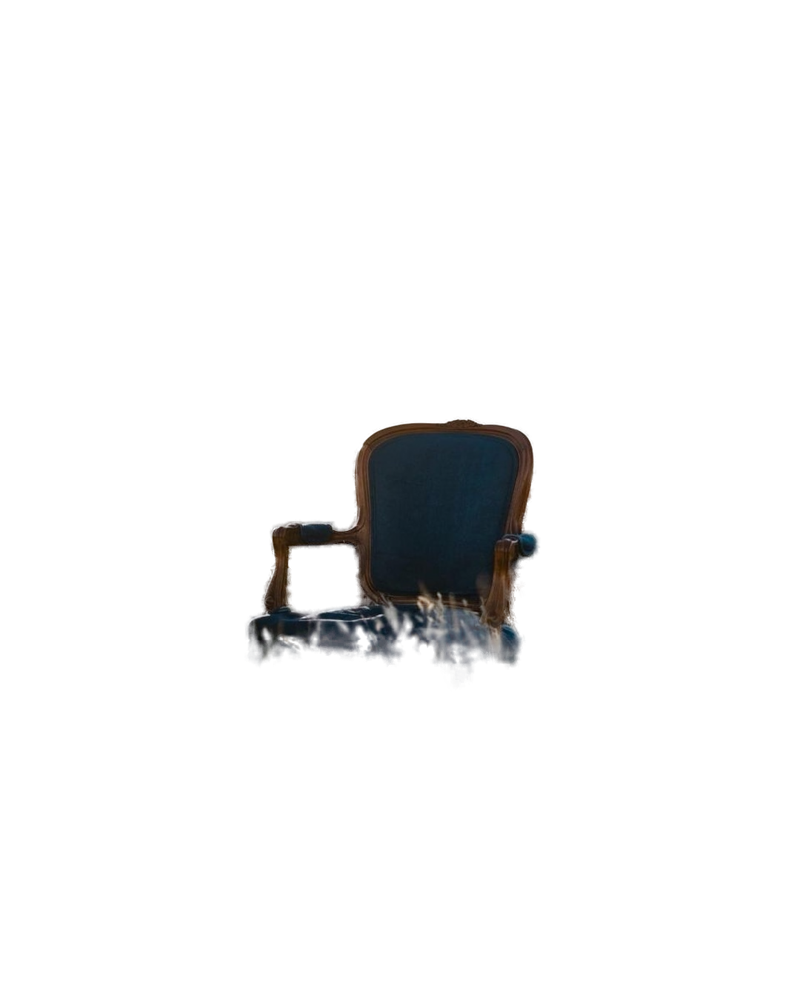

Lia Moraes
Psicóloga
@psi.liamoraes
Você não precisa chegar no
limite

pra começar terapia.
CRP 00/00000
arrasta →

Lia Moraes
Psicóloga
@psi.liamoraes
A gente costuma procurar ajuda
só quando tudo
desmorona.
mas não precisa ser assim.
CRP 00/00000
02/08

Lia Moraes
Psicóloga
@psi.liamoraes
4 sinais de que você
precisa de uma
pausa
Arrasta e veja se você se reconhece em algum.
.
03/08

@psi.liamoraes
CRP 00/00000
no automático
no automático
sinal 01
Você vive no
automático
acorda, cumpre a lista, apaga.
e nem lembra quando parou.
no automático
no automático
@psi.liamoraes
04/08
Lia Moraes
Psicóloga
@psi.liamoraes
sinal 02
Descansar dá
culpa.
Como se parar fosse perder tempo. (Não é.)
CRP 00/00000
05/08

@psi.liamoraes
CRP 00/00000
“As mesmas
histórias
(outro emprego,
outra relação)
a mesma
sensação
no fim.
se repetem.”
sinal 03
@psi.liamoraes
06/08
Lia Moraes
Psicóloga
@psi.liamoraes
sinal 04
Sempre “bem”, mas sempre
cansada.

cansaço que o descanso não resolve
também é um sinal.
CRP 00/00000
07/08
Lia Moraes
Psicóloga
@psi.liamoraes
Se você se reconheceu, vamos
conversar?
agende sua primeira sessão · link na bio
.
CRP 00/00000
08/08